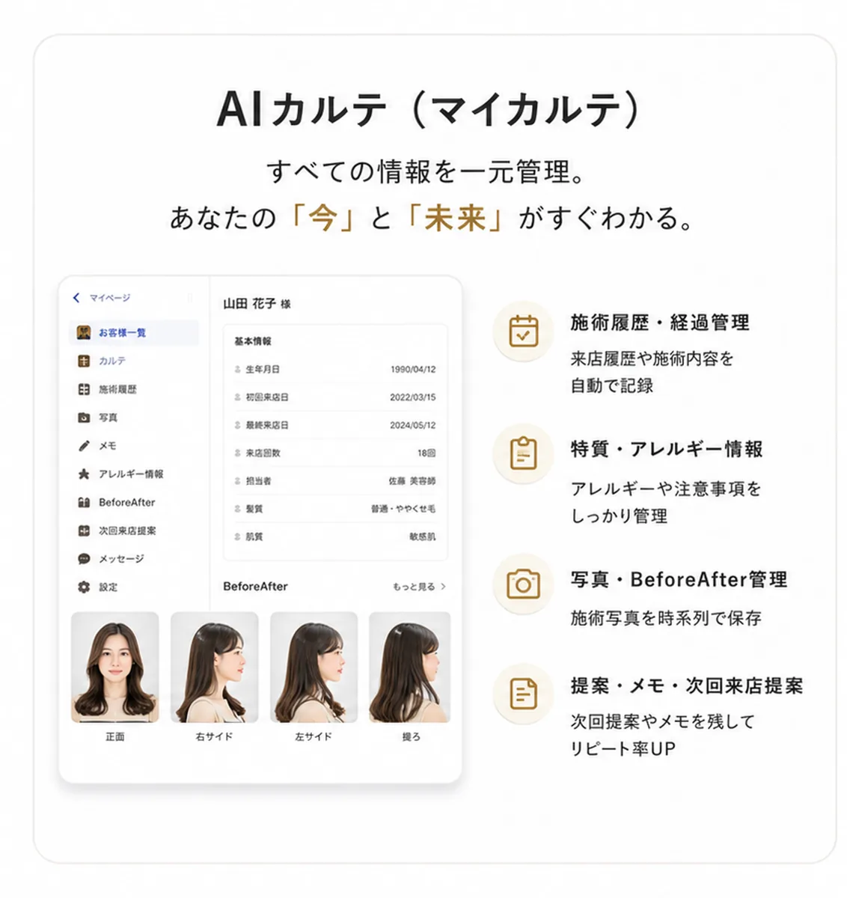
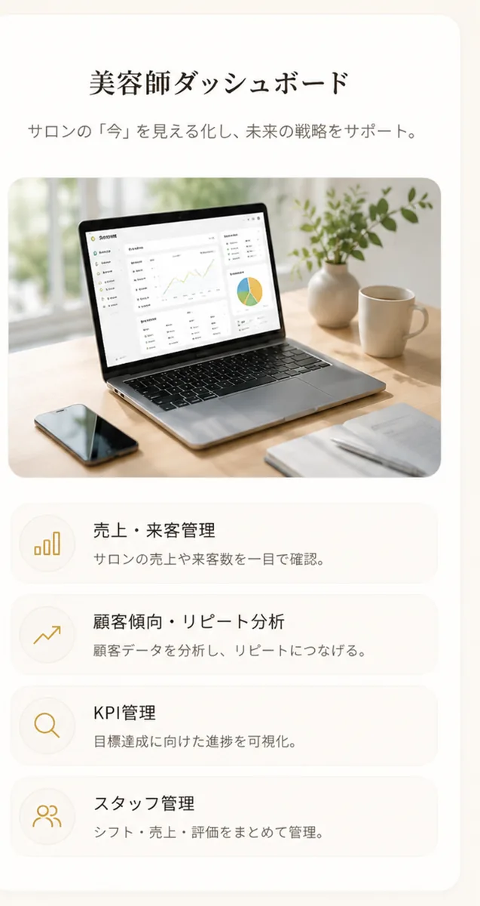

01初めての出会い
来店前カウンセリングで不安を解消
AIカルテとLINE連携で、
出会いから未来までをサポート。
「また会いたくなる」関係を、テクノロジーで。
※数値・画面はシミュレーションです。
実績を保証するものではありません。
SalonRinkがつくる「また会いたくなる」体験
来店前カウンセリングで不安を解消
5つの診断であなたを深く理解
AIカルテをもとに最適なメニューを
LINEでアフターフォロー・相談
合った提案で次回予約につなぐ
信頼の積み重ねでサロンのファンに
横にスワイプして4つの機能をチェック
すべての情報を一元管理。「今」と「未来」がすぐわかる。
いつでも気軽に安心感を。信頼関係を深める。
一人ひとりに合わせた最適な提案を実現。
サロンの「今」を見える化し、未来の戦略をサポート。
※画面はイメージです。
紙やExcel管理から解放。探す・書く・共有の時間を削減。
AIが最適な提案をサポート。自信を持っておすすめ。
LINEフォローと提案で「また来たい」をつくる。
データ活用で売上UPと効率化を同時に。
AIカルテと診断で、好みと変化を記録
LINEでぴったりのケアを、ちょうどいいタイミングで
次回予約・ご紹介につながる
「AIカルテでお客様を深く理解でき、リピート傾向が向上。」
「スタッフ全員の情報共有が簡単になり、チームで成果を。」
「LINEフォロー自動化で、次回来店につながる実感。」
※コメントはイメージです。効果には個人差があります。
他社サービスとの比較
14日間すべて体験
専任サポートが案内

活用方法を継続支援
データで成長を加速

4つの質問で、あなたのサロンの「のびしろ」をチェック。
診断をはじめる ›規模に合わせて選べる3プラン
税込・初期費用0円・14日間無料
無料で始める（14日間）はい。初期費用0円で、期間中はすべての機能をお試しいただけます。
専任サポートが移行をご案内します。
あると連携機能を最大限ご活用いただけます。
月単位でご利用いただけます。
直感的なUIと操作サポートをご用意しています。
管理画面からいつでも手続きいただけます。
まずは14日間、無料でお試しください。
無料で始める（14日間） 資料をLINEで受け取る ›